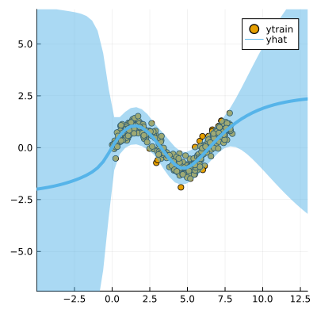

Data
We first generate some synthetic data:
using LaplaceRedux.Data
n = 150 # number of observations
σtrue = 0.30 # true observational noise
x, y = Data.toy_data_regression(n;noise=σtrue)
xs = [[x] for x in x]
X = permutedims(x)MLP
We set up a model and loss with weight regularization:
data = zip(xs,y)
n_hidden = 50
D = size(X,1)
nn = Chain(
Dense(D, n_hidden, tanh),
Dense(n_hidden, 1)
)
loss(x, y) = Flux.Losses.mse(nn(x), y)We train the model:
using Flux.Optimise: update!, Adam
opt = Adam(1e-3)
epochs = 1000
avg_loss(data) = mean(map(d -> loss(d[1],d[2]), data))
show_every = epochs/10
for epoch = 1:epochs
for d in data
gs = gradient(Flux.params(nn)) do
l = loss(d...)
end
update!(opt, Flux.params(nn), gs)
end
if epoch % show_every == 0
println("Epoch " * string(epoch))
@show avg_loss(data)
end
endLaplace Approximation
Laplace approximation can be implemented as follows:
subset_w = :all
la = Laplace(nn; likelihood=:regression, subset_of_weights=subset_w)
fit!(la, data)
plot(la, X, y; zoom=-5, size=(400,400))
Next we optimize the prior precision P₀ and and observational noise σ using Empirical Bayes:
optimize_prior!(la; verbose=true)
plot(la, X, y; zoom=-5, size=(400,400))Iteration 10: P₀=0.3884183915097719, σ=0.37462791983413435
loss(exp.(logP₀), exp.(logσ)) = 62.286501135197625
Iteration 20: P₀=0.19286897058427785, σ=0.22662547463745616
loss(exp.(logP₀), exp.(logσ)) = 60.95395063398549
Iteration 30: P₀=0.12850167531313283, σ=0.31089662895570863
loss(exp.(logP₀), exp.(logσ)) = 50.466530344502566
Iteration 40: P₀=0.10713367763315505, σ=0.3117173325625265
loss(exp.(logP₀), exp.(logσ)) = 50.52282762877773
Iteration 50: P₀=0.10242099028762099, σ=0.27382604745869443
loss(exp.(logP₀), exp.(logσ)) = 50.25213793017164
Iteration 60: P₀=0.10482842243715489, σ=0.29384717721411097
loss(exp.(logP₀), exp.(logσ)) = 49.78683248122465
Iteration 70: P₀=0.10972567294088902, σ=0.2922018292211539
loss(exp.(logP₀), exp.(logσ)) = 49.75103929588618
Iteration 80: P₀=0.11440323090214488, σ=0.2861879031236091
loss(exp.(logP₀), exp.(logσ)) = 49.75147574978594
Iteration 90: P₀=0.11750906238748272, σ=0.2917479215594753
loss(exp.(logP₀), exp.(logσ)) = 49.73732964241694
Iteration 100: P₀=0.1188587829052049, σ=0.28865384391024296
loss(exp.(logP₀), exp.(logσ)) = 49.730466973202795